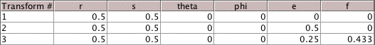

| The vertices of the equilateral gasket are |
| V1 = (0,0), V2 = (1,0), and V3 = (1/2,sqrt(3)/2) approx (0.5,0.866). |
| Recall the midpoint formula: the midpoint of |
| Moving half-way between (x, y) and V1 is just taking the midpoint of |
| (x, y) -> ((x+0)/2, (y+0)/2) = (x/2, y/2). |
| Moving half-way between (x, y) and V2 is just taking the midpoint of |
| (x, y) -> ((x+1)/2, (y+0)/2) = (x/2, y/2) + (1/2, 0). |
| Moving half-way between (x, y) and V3 is just taking the midpoint of |
| (x, y) -> ((x+(1/2))/2, (y+(sqrt(3)/2))/2) = (x/2, y/2) + (1/4, sqrt(3)/4). |
| That is, the chaos game rules for the vertices of the equilateral traingle are equivalent to the IFS ruls for the equilateral gasket. |
|  |
Return to Exercises.